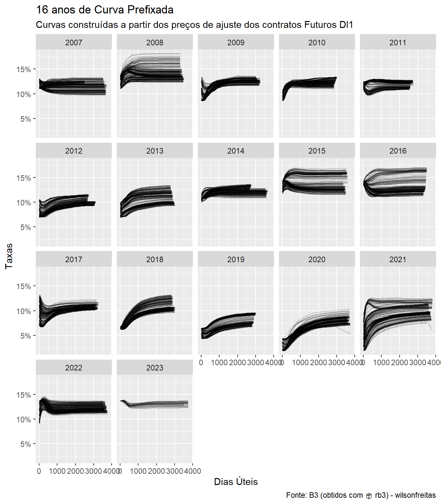
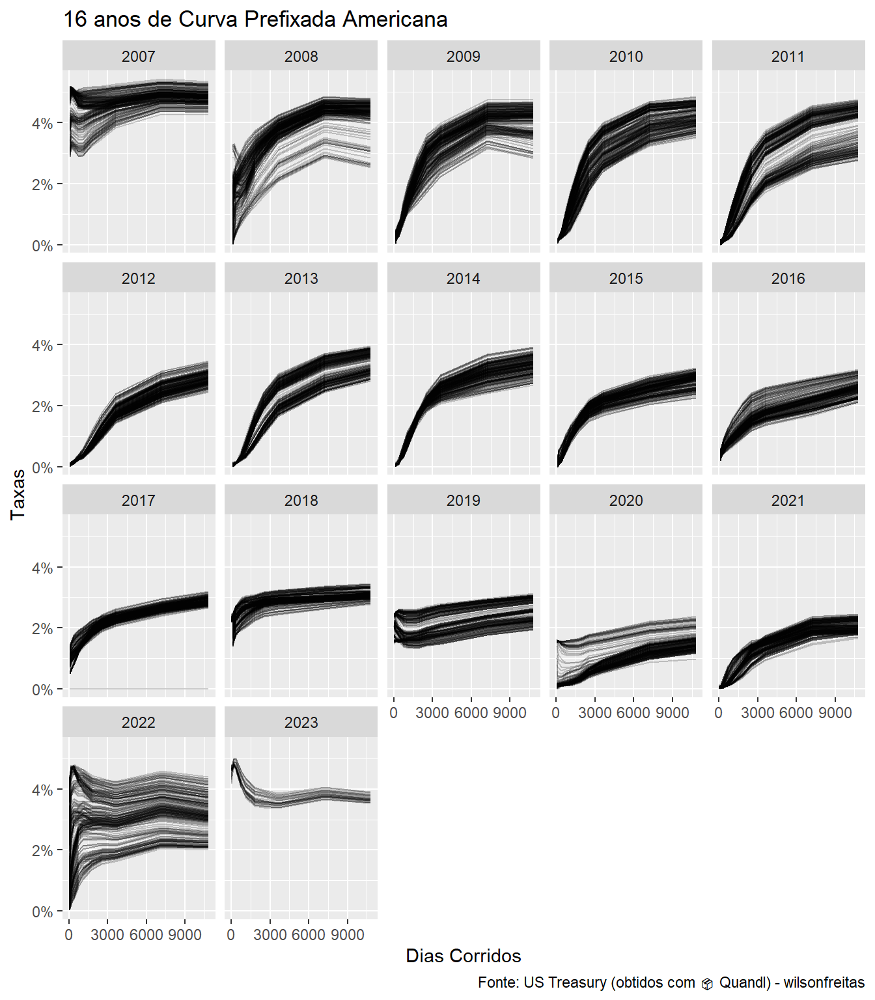

Observando a dinâmica da estrutura a termo de juros no Brasil e nos Estados Unidos ao longo dos últimos 16 anos.
R
fixedincome
rb3
opendata
Author
Wilson Freitas
Published
June 18, 2022
library(rb3)library(bizdays)
Attaching package: 'bizdays'
The following object is masked from 'package:stats':
offset
library(dplyr)
Attaching package: 'dplyr'
The following objects are masked from 'package:stats':
filter, lag
The following objects are masked from 'package:base':
intersect, setdiff, setequal, union
library(fixedincome)
Attaching package: 'fixedincome'
The following objects are masked from 'package:dplyr':
first, last
library(ggplot2)
! Removed cached file C:/Users/wilso/R/rb3-cache/AjustesDiarios/080e2cb9e1e3eb735c8d6dc0c3194e86-parsed.rds that returns NULL.
! Removed cached file C:/Users/wilso/R/rb3-cache/AjustesDiarios/1510e962a774e004d248683fd79b1374-parsed.rds that returns NULL.
⠙ Fetching data points 199/4054 | ■■ 5% | ETA: …
! Removed cached file C:/Users/wilso/R/rb3-cache/AjustesDiarios/d8595c0a5e74dbf205b6146dcfd9ba03-parsed.rds that returns NULL.
⠙ Fetching data points 199/4054 | ■■ 5% | ETA: …
! Removed cached file C:/Users/wilso/R/rb3-cache/AjustesDiarios/18d6b35dd6d2aeb821e9fd9aa07dbc00-parsed.rds that returns NULL.
⠙ Fetching data points 199/4054 | ■■ 5% | ETA: …
! Removed cached file C:/Users/wilso/R/rb3-cache/AjustesDiarios/a4320cd9f9477bf8e373e3b6ae21374c-parsed.rds that returns NULL.
⠙ Fetching data points 199/4054 | ■■ 5% | ETA: …
! Removed cached file C:/Users/wilso/R/rb3-cache/AjustesDiarios/7b3f5d9f3c7f40d438cfb10527e854b3-parsed.rds that returns NULL.
⠙ Fetching data points 199/4054 | ■■ 5% | ETA: …
! Removed cached file C:/Users/wilso/R/rb3-cache/AjustesDiarios/427f326863e9f7e25213268f6330a79e-parsed.rds that returns NULL.
⠙ Fetching data points 199/4054 | ■■ 5% | ETA: …
! Removed cached file C:/Users/wilso/R/rb3-cache/AjustesDiarios/1dcfe447ea262e7a22e5e30b1a90ee3a-parsed.rds that returns NULL.
⠙ Fetching data points 199/4054 | ■■ 5% | ETA: …
! Removed cached file C:/Users/wilso/R/rb3-cache/AjustesDiarios/96156a38c615d754cc941aa54a434f51-parsed.rds that returns NULL.
⠙ Fetching data points 199/4054 | ■■ 5% | ETA: …
! Removed cached file C:/Users/wilso/R/rb3-cache/AjustesDiarios/6c4930212718a60fa6a9094d8c2461a2-parsed.rds that returns NULL.
⠙ Fetching data points 199/4054 | ■■ 5% | ETA: …
! Removed cached file C:/Users/wilso/R/rb3-cache/AjustesDiarios/1adc35776bcd63801ee57ce3f8f65667-parsed.rds that returns NULL.
⠙ Fetching data points 199/4054 | ■■ 5% | ETA: …
! Removed cached file C:/Users/wilso/R/rb3-cache/AjustesDiarios/99ea0e88b0cc34c835f52cdd0049a999-parsed.rds that returns NULL.
⠙ Fetching data points 199/4054 | ■■ 5% | ETA: …
! Removed cached file C:/Users/wilso/R/rb3-cache/AjustesDiarios/479f5927bd05578ed52ef2629cab7056-parsed.rds that returns NULL.
⠙ Fetching data points 199/4054 | ■■ 5% | ETA: …
! Removed cached file C:/Users/wilso/R/rb3-cache/AjustesDiarios/631a5c5accec13616555c0a78a9aa7f2-parsed.rds that returns NULL.
⠙ Fetching data points 199/4054 | ■■ 5% | ETA: …
⠸ Fetching data points 754/4054 | ■■■■■■■ 19% | ETA: …
! Removed cached file C:/Users/wilso/R/rb3-cache/AjustesDiarios/dcd47b0a844e38db6b61b9b63c22f6a3-parsed.rds that returns NULL.
⠸ Fetching data points 754/4054 | ■■■■■■■ 19% | ETA: …
! Removed cached file C:/Users/wilso/R/rb3-cache/AjustesDiarios/60d4032989dff49ad0d0c1c9076aff1a-parsed.rds that returns NULL.
⠸ Fetching data points 754/4054 | ■■■■■■■ 19% | ETA: …
! Removed cached file C:/Users/wilso/R/rb3-cache/AjustesDiarios/5674c7c054b857c8627674b061592516-parsed.rds that returns NULL.
⠸ Fetching data points 754/4054 | ■■■■■■■ 19% | ETA: …
! Removed cached file C:/Users/wilso/R/rb3-cache/AjustesDiarios/4faa28330b3585f9be27a543dea59d86-parsed.rds that returns NULL.
⠸ Fetching data points 754/4054 | ■■■■■■■ 19% | ETA: …
! Removed cached file C:/Users/wilso/R/rb3-cache/AjustesDiarios/f7646668172c0f4a610906fa21a2751c-parsed.rds that returns NULL.
⠸ Fetching data points 754/4054 | ■■■■■■■ 19% | ETA: …
⠼ Fetching data points 1058/4054 | ■■■■■■■■■ 26% | ETA:…
! Removed cached file C:/Users/wilso/R/rb3-cache/AjustesDiarios/c8c023431cc0d19c3c95942d3a27b73a-parsed.rds that returns NULL.
⠼ Fetching data points 1058/4054 | ■■■■■■■■■ 26% | ETA:…
! Removed cached file C:/Users/wilso/R/rb3-cache/AjustesDiarios/134bc1ec7d0a352b48354d5af68038f0-parsed.rds that returns NULL.
⠼ Fetching data points 1058/4054 | ■■■■■■■■■ 26% | ETA:…
⠴ Fetching data points 1364/4054 | ■■■■■■■■■■■ 34% | ETA:…
! Removed cached file C:/Users/wilso/R/rb3-cache/AjustesDiarios/117745dce5d5cb4d890e2230f5cca206-parsed.rds that returns NULL.
⠴ Fetching data points 1364/4054 | ■■■■■■■■■■■ 34% | ETA:…
! Removed cached file C:/Users/wilso/R/rb3-cache/AjustesDiarios/68a26da34d9f76552f0305d314d843ef-parsed.rds that returns NULL.
⠴ Fetching data points 1364/4054 | ■■■■■■■■■■■ 34% | ETA:…
! Removed cached file C:/Users/wilso/R/rb3-cache/AjustesDiarios/c465388767a41742d3153041e2aa95f4-parsed.rds that returns NULL.
⠴ Fetching data points 1364/4054 | ■■■■■■■■■■■ 34% | ETA:…
! Removed cached file C:/Users/wilso/R/rb3-cache/AjustesDiarios/2b1a1b2e121587ad6e9c4d8bf75a69b3-parsed.rds that returns NULL.
⠴ Fetching data points 1364/4054 | ■■■■■■■■■■■ 34% | ETA:…
! Removed cached file C:/Users/wilso/R/rb3-cache/AjustesDiarios/03111a15447935a196fccedf36243f1e-parsed.rds that returns NULL.
⠴ Fetching data points 1364/4054 | ■■■■■■■■■■■ 34% | ETA:…
! Removed cached file C:/Users/wilso/R/rb3-cache/AjustesDiarios/199c548401f10e0252e2bef33605625a-parsed.rds that returns NULL.
⠴ Fetching data points 1364/4054 | ■■■■■■■■■■■ 34% | ETA:…
⠦ Fetching data points 1652/4054 | ■■■■■■■■■■■■■ 41% | ETA:…
! Removed cached file C:/Users/wilso/R/rb3-cache/AjustesDiarios/ae8212a0126585478946aa8eaa3c897d-parsed.rds that returns NULL.
⠦ Fetching data points 1652/4054 | ■■■■■■■■■■■■■ 41% | ETA:…
! Removed cached file C:/Users/wilso/R/rb3-cache/AjustesDiarios/769bdbf6414d30e8695c2559b04f9313-parsed.rds that returns NULL.
⠦ Fetching data points 1652/4054 | ■■■■■■■■■■■■■ 41% | ETA:…
! Removed cached file C:/Users/wilso/R/rb3-cache/AjustesDiarios/2493a7b1b75c928059789157a2afaed6-parsed.rds that returns NULL.
⠦ Fetching data points 1652/4054 | ■■■■■■■■■■■■■ 41% | ETA:…
! Removed cached file C:/Users/wilso/R/rb3-cache/AjustesDiarios/4814b715cfe7655e14c1569734485b13-parsed.rds that returns NULL.
⠦ Fetching data points 1652/4054 | ■■■■■■■■■■■■■ 41% | ETA:…
! Removed cached file C:/Users/wilso/R/rb3-cache/AjustesDiarios/d6a37e4f3970da2216baeeade0e9b962-parsed.rds that returns NULL.
⠦ Fetching data points 1652/4054 | ■■■■■■■■■■■■■ 41% | ETA:…
⠧ Fetching data points 1892/4054 | ■■■■■■■■■■■■■■■ 47% | ETA:…
! Removed cached file C:/Users/wilso/R/rb3-cache/AjustesDiarios/41aa4082eeec395b7feb3a956bfb1a87-parsed.rds that returns NULL.
⠧ Fetching data points 1892/4054 | ■■■■■■■■■■■■■■■ 47% | ETA:…
! Removed cached file C:/Users/wilso/R/rb3-cache/AjustesDiarios/ced216837f9da99582aadad11ca0773d-parsed.rds that returns NULL.
⠧ Fetching data points 1892/4054 | ■■■■■■■■■■■■■■■ 47% | ETA:…
! Removed cached file C:/Users/wilso/R/rb3-cache/AjustesDiarios/be44ed0ec4186fc2fafdb47cc9614e87-parsed.rds that returns NULL.
⠧ Fetching data points 1892/4054 | ■■■■■■■■■■■■■■■ 47% | ETA:…
! Removed cached file C:/Users/wilso/R/rb3-cache/AjustesDiarios/a2a2abdbb71c86a1941da637bda10f45-parsed.rds that returns NULL.
⠧ Fetching data points 1892/4054 | ■■■■■■■■■■■■■■■ 47% | ETA:…
⠇ Fetching data points 2146/4054 | ■■■■■■■■■■■■■■■■■ 53% | ETA:…
! Removed cached file C:/Users/wilso/R/rb3-cache/AjustesDiarios/f80d336c7034dca6d280d5300621956a-parsed.rds that returns NULL.
⠇ Fetching data points 2146/4054 | ■■■■■■■■■■■■■■■■■ 53% | ETA:…
! Removed cached file C:/Users/wilso/R/rb3-cache/AjustesDiarios/1921f576fd77dc68dcc361d921f7d33f-parsed.rds that returns NULL.
⠇ Fetching data points 2146/4054 | ■■■■■■■■■■■■■■■■■ 53% | ETA:…
! Removed cached file C:/Users/wilso/R/rb3-cache/AjustesDiarios/56ea48877c8a76f9400c87be31f8028e-parsed.rds that returns NULL.
⠇ Fetching data points 2146/4054 | ■■■■■■■■■■■■■■■■■ 53% | ETA:…
! Removed cached file C:/Users/wilso/R/rb3-cache/AjustesDiarios/3a377df9574995fcea76277cf66229a4-parsed.rds that returns NULL.
⠇ Fetching data points 2146/4054 | ■■■■■■■■■■■■■■■■■ 53% | ETA:…
⠏ Fetching data points 2382/4054 | ■■■■■■■■■■■■■■■■■■■ 59% | ETA:…
! Removed cached file C:/Users/wilso/R/rb3-cache/AjustesDiarios/fbfb62bc5bf85827f6a379f1f90ef457-parsed.rds that returns NULL.
⠏ Fetching data points 2382/4054 | ■■■■■■■■■■■■■■■■■■■ 59% | ETA:…
! Removed cached file C:/Users/wilso/R/rb3-cache/AjustesDiarios/f167df23f63004a18ce9b42308f40f82-parsed.rds that returns NULL.
⠏ Fetching data points 2382/4054 | ■■■■■■■■■■■■■■■■■■■ 59% | ETA:…
⠋ Fetching data points 2662/4054 | ■■■■■■■■■■■■■■■■■■■■■ 66% | ETA:…
! Removed cached file C:/Users/wilso/R/rb3-cache/AjustesDiarios/125bfbd76261eb5f9fb51caa162ff9d4-parsed.rds that returns NULL.
⠋ Fetching data points 2662/4054 | ■■■■■■■■■■■■■■■■■■■■■ 66% | ETA:…
! Removed cached file C:/Users/wilso/R/rb3-cache/AjustesDiarios/1ebdf89b3c235780cffb64e60a8ef85a-parsed.rds that returns NULL.
⠋ Fetching data points 2662/4054 | ■■■■■■■■■■■■■■■■■■■■■ 66% | ETA:…
! Removed cached file C:/Users/wilso/R/rb3-cache/AjustesDiarios/26bd082dfaf44bac451a55a5662a2fd6-parsed.rds that returns NULL.
⠋ Fetching data points 2662/4054 | ■■■■■■■■■■■■■■■■■■■■■ 66% | ETA:…
! Removed cached file C:/Users/wilso/R/rb3-cache/AjustesDiarios/fa3875cac6688b226e699f5d1be8316e-parsed.rds that returns NULL.
⠋ Fetching data points 2662/4054 | ■■■■■■■■■■■■■■■■■■■■■ 66% | ETA:…
⠙ Fetching data points 2921/4054 | ■■■■■■■■■■■■■■■■■■■■■■■ 72% | ETA:…
! Removed cached file C:/Users/wilso/R/rb3-cache/AjustesDiarios/9bae55e162e6d8634116689db1ced4de-parsed.rds that returns NULL.
⠙ Fetching data points 2921/4054 | ■■■■■■■■■■■■■■■■■■■■■■■ 72% | ETA:…
! Removed cached file C:/Users/wilso/R/rb3-cache/AjustesDiarios/93cedd658d260591bf4b89f2a301d3a6-parsed.rds that returns NULL.
⠙ Fetching data points 2921/4054 | ■■■■■■■■■■■■■■■■■■■■■■■ 72% | ETA:…
! Removed cached file C:/Users/wilso/R/rb3-cache/AjustesDiarios/e5e67b76c7684e229e92ebf31defddb0-parsed.rds that returns NULL.
⠙ Fetching data points 2921/4054 | ■■■■■■■■■■■■■■■■■■■■■■■ 72% | ETA:…
! Removed cached file C:/Users/wilso/R/rb3-cache/AjustesDiarios/0cb75e7608014434b910d0f6eed469d6-parsed.rds that returns NULL.
⠙ Fetching data points 2921/4054 | ■■■■■■■■■■■■■■■■■■■■■■■ 72% | ETA:…
! Removed cached file C:/Users/wilso/R/rb3-cache/AjustesDiarios/60f1cac688426f3548bde90067ff6b57-parsed.rds that returns NULL.
⠙ Fetching data points 2921/4054 | ■■■■■■■■■■■■■■■■■■■■■■■ 72% | ETA:…
⠹ Fetching data points 3197/4054 | ■■■■■■■■■■■■■■■■■■■■■■■■■ 79% | ETA:…
! Removed cached file C:/Users/wilso/R/rb3-cache/AjustesDiarios/120615d3cc3e40c40f3da1bc530ee976-parsed.rds that returns NULL.
⠹ Fetching data points 3197/4054 | ■■■■■■■■■■■■■■■■■■■■■■■■■ 79% | ETA:…
! Removed cached file C:/Users/wilso/R/rb3-cache/AjustesDiarios/efd149e6dea0edb26cab44371a11bd9c-parsed.rds that returns NULL.
⠹ Fetching data points 3197/4054 | ■■■■■■■■■■■■■■■■■■■■■■■■■ 79% | ETA:…
! Removed cached file C:/Users/wilso/R/rb3-cache/AjustesDiarios/89377ffb8213ffc3f60c414db22f5194-parsed.rds that returns NULL.
⠹ Fetching data points 3197/4054 | ■■■■■■■■■■■■■■■■■■■■■■■■■ 79% | ETA:…
⠸ Fetching data points 3494/4054 | ■■■■■■■■■■■■■■■■■■■■■■■■■■■ 86% | ETA:…
! Removed cached file C:/Users/wilso/R/rb3-cache/AjustesDiarios/d025aaaff9277d60fad129c2a947d288-parsed.rds that returns NULL.
⠸ Fetching data points 3494/4054 | ■■■■■■■■■■■■■■■■■■■■■■■■■■■ 86% | ETA:…
! Removed cached file C:/Users/wilso/R/rb3-cache/AjustesDiarios/e3685c842eb0d208cb90f72e16d525a7-parsed.rds that returns NULL.
⠸ Fetching data points 3494/4054 | ■■■■■■■■■■■■■■■■■■■■■■■■■■■ 86% | ETA:…
! Removed cached file C:/Users/wilso/R/rb3-cache/AjustesDiarios/97177d9d007efd4de20b3ce969ced4cb-parsed.rds that returns NULL.
⠸ Fetching data points 3494/4054 | ■■■■■■■■■■■■■■■■■■■■■■■■■■■ 86% | ETA:…
! Removed cached file C:/Users/wilso/R/rb3-cache/AjustesDiarios/42878d933ac57df3374a4bafbd048175-parsed.rds that returns NULL.
⠸ Fetching data points 3494/4054 | ■■■■■■■■■■■■■■■■■■■■■■■■■■■ 86% | ETA:…
⠼ Fetching data points 3752/4054 | ■■■■■■■■■■■■■■■■■■■■■■■■■■■■■ 93% | ETA:…
! Removed cached file C:/Users/wilso/R/rb3-cache/AjustesDiarios/2b812e5506888e8c931cb540ae305b09-parsed.rds that returns NULL.
⠼ Fetching data points 3752/4054 | ■■■■■■■■■■■■■■■■■■■■■■■■■■■■■ 93% | ETA:…
! Removed cached file C:/Users/wilso/R/rb3-cache/AjustesDiarios/55ca03ce272d07db0c5ac475424add1a-parsed.rds that returns NULL.
⠼ Fetching data points 3752/4054 | ■■■■■■■■■■■■■■■■■■■■■■■■■■■■■ 93% | ETA:…
Warning: Automatic coercion from double to character was deprecated in purrr 1.0.0.
ℹ Please use an explicit call to `as.character()` within `map_chr()` instead.
ℹ The deprecated feature was likely used in the rb3 package.
Please report the issue at <https://github.com/wilsonfreitas/rb3/issues>.
⠴ Fetching data points 3931/4054 | ■■■■■■■■■■■■■■■■■■■■■■■■■■■■■■ 97% | ETA:…
⠦ Fetching data points 3938/4054 | ■■■■■■■■■■■■■■■■■■■■■■■■■■■■■■ 97% | ETA:…
⠧ Fetching data points 3945/4054 | ■■■■■■■■■■■■■■■■■■■■■■■■■■■■■■ 97% | ETA:…
⠇ Fetching data points 3950/4054 | ■■■■■■■■■■■■■■■■■■■■■■■■■■■■■■ 97% | ETA:…
⠏ Fetching data points 3956/4054 | ■■■■■■■■■■■■■■■■■■■■■■■■■■■■■■ 98% | ETA:…
⠋ Fetching data points 3962/4054 | ■■■■■■■■■■■■■■■■■■■■■■■■■■■■■■ 98% | ETA:…
⠙ Fetching data points 3968/4054 | ■■■■■■■■■■■■■■■■■■■■■■■■■■■■■■ 98% | ETA:…
⠹ Fetching data points 3973/4054 | ■■■■■■■■■■■■■■■■■■■■■■■■■■■■■■ 98% | ETA:…
⠸ Fetching data points 3979/4054 | ■■■■■■■■■■■■■■■■■■■■■■■■■■■■■■ 98% | ETA:…
⠼ Fetching data points 3985/4054 | ■■■■■■■■■■■■■■■■■■■■■■■■■■■■■■ 98% | ETA:…
⠴ Fetching data points 3991/4054 | ■■■■■■■■■■■■■■■■■■■■■■■■■■■■■■■ 98% | ETA:…
⠦ Fetching data points 3997/4054 | ■■■■■■■■■■■■■■■■■■■■■■■■■■■■■■■ 99% | ETA:…
⠧ Fetching data points 4003/4054 | ■■■■■■■■■■■■■■■■■■■■■■■■■■■■■■■ 99% | ETA:…
⠇ Fetching data points 4009/4054 | ■■■■■■■■■■■■■■■■■■■■■■■■■■■■■■■ 99% | ETA:…
⠏ Fetching data points 4014/4054 | ■■■■■■■■■■■■■■■■■■■■■■■■■■■■■■■ 99% | ETA:…
! Removed C:\Users\wilso\R\rb3-cache/AjustesDiarios/8efc8696de8165690ea4be9abff3bfe8.html - It hasn't valid content.
⠏ Fetching data points 4014/4054 | ■■■■■■■■■■■■■■■■■■■■■■■■■■■■■■■ 99% | ETA:…
⠋ Fetching data points 4020/4054 | ■■■■■■■■■■■■■■■■■■■■■■■■■■■■■■■ 99% | ETA:…
⠙ Fetching data points 4026/4054 | ■■■■■■■■■■■■■■■■■■■■■■■■■■■■■■■ 99% | ETA:…
⠹ Fetching data points 4032/4054 | ■■■■■■■■■■■■■■■■■■■■■■■■■■■■■■■ 99% | ETA:…
⠸ Fetching data points 4037/4054 | ■■■■■■■■■■■■■■■■■■■■■■■■■■■■■■■ 100% | ETA:…
⠼ Fetching data points 4042/4054 | ■■■■■■■■■■■■■■■■■■■■■■■■■■■■■■■ 100% | ETA:…
⠴ Fetching data points 4048/4054 | ■■■■■■■■■■■■■■■■■■■■■■■■■■■■■■■ 100% | ETA:…
⠦ Fetching data points 4053/4054 | ■■■■■■■■■■■■■■■■■■■■■■■■■■■■■■■ 100% | ETA:…
O pacote {rb3} faz extrações de dados do site da B3. Temos diversas informações disponíveis no site inclusive o histórico de diversos dados.
Um conjunto de dados que mais utilizo são os preços de ajuste dos contratos futuros. Este histórico é um dos mais antigos disponível.
Vou baixar todo o histórico de contratos futuros desde 2007. A partir dos preços de ajuste é possível construir o histórico de curvas prefixadas. Depois vou fazer uma segmentação pelo ano da data de referência para que seja possível visualizar, para cada ano, todo o espectro de curvas no ano.
Vou começar baixando todos os dados desde 2007 até a última data disponível. Para isso vou utilizar a função rb3::futures_mget. Isso leva um bom tempo!
É necessário filtrar os contratos futuros de DI1 para construir a curva prefixada.
df_di1 <- df |>filter(commodity =="DI1")
Para construir a curva prefixada é necessário obter as datas de vencimento dos contratos futuros. Para isso utilizo a função rb3::maturity2date que converte o código de vencimento em data. Adicionalmente faço o ajuste da data de referência criando a coluna fixing, calculo os dias úteis (coluna business_days) e a taxa de juros com base no preço de ajuste price gerando a coluna adjusted_tax.
Termino filtrando as linhas com business_days maior que zero, pois não me interessam os futuros na data de vencimento.
Agora vamos gerar a visualização com ggplot2.
df_di1_futures |>mutate(year =as.integer(format(refdate, "%Y"))) |>ggplot(aes(x = business_days, y = adjusted_tax,group = refdate )) +geom_line(alpha =0.2) +facet_wrap(. ~ year) +labs(x ="Dias Úteis", y ="Taxas",title ="16 anos de Curva Prefixada",subtitle ="Curvas construídas a partir dos preços de ajuste dos contratos Futuros DI1",caption ="Fonte: B3 (obtidos com \U1F4E6 rb3) - wilsonfreitas" ) +scale_y_continuous(labels = scales::percent)

Curioso ver a mudança de shape da curva entre os anos e ao longo de cada ano. Uma coisa curiosa é observar os anos de 2016, 2017 e 2018. 2016/2017 foram os anos do impechemant da presidente Dilma. Em 2016 a parte curta da curva variou pouco e a parte longa variou muito. Em 2017 aconteceu o oposto, a parte curta da curva variou mais que a parte longa da curva. Nestes anos, as mudanças afetam diretamente o shape da curva. Em 2018, o ano da eleição e da facada do Bolsonaro, há uma grande variação na parte longa da curva, mas sem alterar o shape da curva. Ainda é possível avaliar o comportamento da curva com os demais eventos políticos e econômicos. Em 2021, por exemplo, onde ocorreu uma elevação da taxa SELIC e uma piora do cenário fiscal, temos um espectro muita amplo do shape da curva.
É possível construir uma visualização equivalente utilizando dados da curva americana que podem ser obtidos com o pacote Quandl.
The following objects are masked from 'package:base':
as.Date, as.Date.numeric
Attaching package: 'xts'
The following objects are masked from 'package:fixedincome':
first, last
The following objects are masked from 'package:dplyr':
first, last
Os dados vem no formato wide onde cada coluna representa um vértice e cada linha uma curva. Dessa maneira, faço a conversão dos dados para o formato longo com a função tidyr::pivot_longer.
# A tibble: 99,480 × 3
Date name value
<date> <chr> <dbl>
1 2023-02-17 1 MO 4.64
2 2023-02-17 2 MO 4.81
3 2023-02-17 3 MO 4.84
4 2023-02-17 6 MO 4.99
5 2023-02-17 1 YR 5
6 2023-02-17 2 YR 4.6
7 2023-02-17 3 YR 4.33
8 2023-02-17 5 YR 4.03
9 2023-02-17 7 YR 3.95
10 2023-02-17 10 YR 3.82
# … with 99,470 more rows
Aqui faço o tratamento dos dados para converter os prazos em números, considerando meses de 30 dias e anos de 360 dias.
# A tibble: 99,480 × 4
Date name value days
<date> <chr> <dbl> <dbl>
1 2023-02-17 1 MO 4.64 30
2 2023-02-17 2 MO 4.81 60
3 2023-02-17 3 MO 4.84 90
4 2023-02-17 6 MO 4.99 180
5 2023-02-17 1 YR 5 360
6 2023-02-17 2 YR 4.6 720
7 2023-02-17 3 YR 4.33 1080
8 2023-02-17 5 YR 4.03 1800
9 2023-02-17 7 YR 3.95 2520
10 2023-02-17 10 YR 3.82 3600
# … with 99,470 more rows
Agora fazemos a visualização.
yc_all_longer |>mutate(year =as.integer(format(Date, "%Y")),value = value /100 ) |>filter(year >=2007) |>ggplot(aes(x = days, y = value,group = Date )) +geom_line(alpha =0.2) +facet_wrap(. ~ year) +labs(x ="Dias Corridos", y ="Taxas",title ="16 anos de Curva Prefixada Americana",caption ="Fonte: US Treasury (obtidos com \U1F4E6 Quandl) - wilsonfreitas" ) +scale_y_continuous(labels = scales::percent)

Já na curva americana, a dinâmica é muito mais bem comportada. A parte longo costuma oscilar, mas mantendo a dinâmica. Os anos 2007, 2008 e 2020, onde tivemos crise do subprime e COVID, trouxeram mais volatilidade.